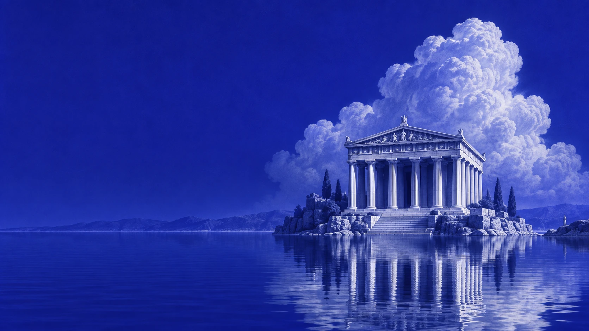

OLIVIA ARCANA / 01
Open the living hero ↗Hero design system · September 2026
The Ultramarine
Sanctuary.
A personal almanac, set in a monumental blue dreamscape. Printed grain, moonlit stone, reflective water. A still place with a living atmosphere.

01 / One world, six tones
Blue gives structure. Gilt marks the action.Abyss
#10134DUltramarine
#20279BLit blue
#343CB9Mist
#B7BCE9Moonstone
#E8E9FFGilt
#E0B76802 / Editorial, not ornamental
Three families. One hierarchy.Cormorant Garamond · Display
Your stars,
translated clearly.
translated clearly.
DM Sans · Reading
Astrology and tarot, shaped by your birth chart and the question you bring.
IBM Plex Mono · Marginal notes
A PERSONAL ALMANAC
I. THE SANCTUARY
EN / UA
I. THE SANCTUARY
EN / UA
03 / A clear invitation
One small gilt action. One underlined alternative. Crisp edges, fine rules, open space. Keep the scene visible; place the copy directly on the blue.
04 / Atmosphere in motion
| Water reflections | Continuous, shallow ripples |
| Cloud crown | Slow, local displacement |
| Mist veils | 26s / 34s drifting loops |
| Temple & typography | Anchored |
| Reduced motion / Pause | Complete still composition |
05 / The first impression
One direction, composed for two screens